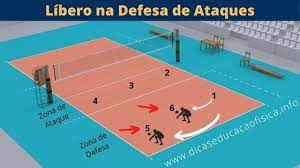

Vamos começar o Treino!
Posição
No vôlei, existe uma posição específica para receber as bolas chamada de "Libero". Você deve sempre estar atento na hora de entrar e sair durante o rodizio, pois apenas quando o central está no fundo que você irá entra em seu lugar. E quando for sua vez de ir para a rede você sairá para o central poder voltar a jogar.
Recepção
Essa é a principal função dessa posição, recepção. Na maioria das vezes, você deverá dar seu máximo para correr até a bola, ou se jogando no chão para não deixa-la cair. Assim você precisará cair usando uma técnica do vôlei chamada de "peixinho".
Passo 1 : Como se estivesse em uma piscina, mergulhe no chão com a mão esticada para a bola ricochetear para cima.
Passo 2 : Se apoie com outra mão, jogando seu tronco ara trás para que possa deslizar de peito.